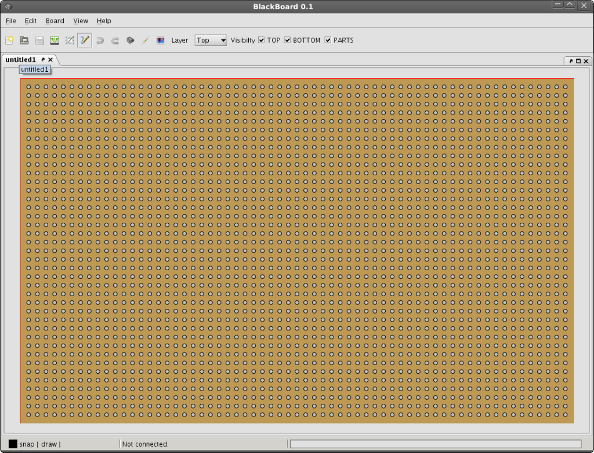
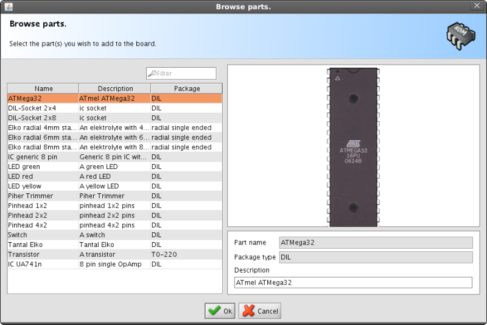
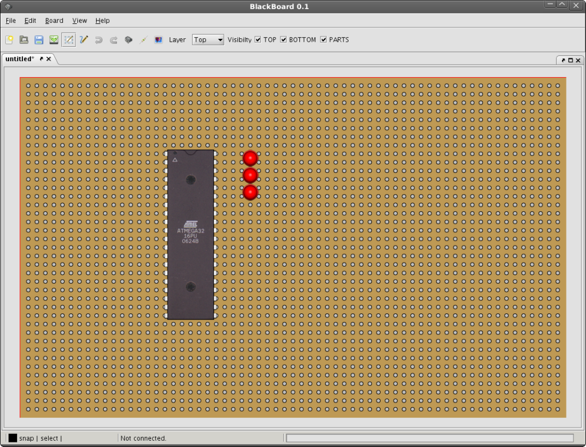
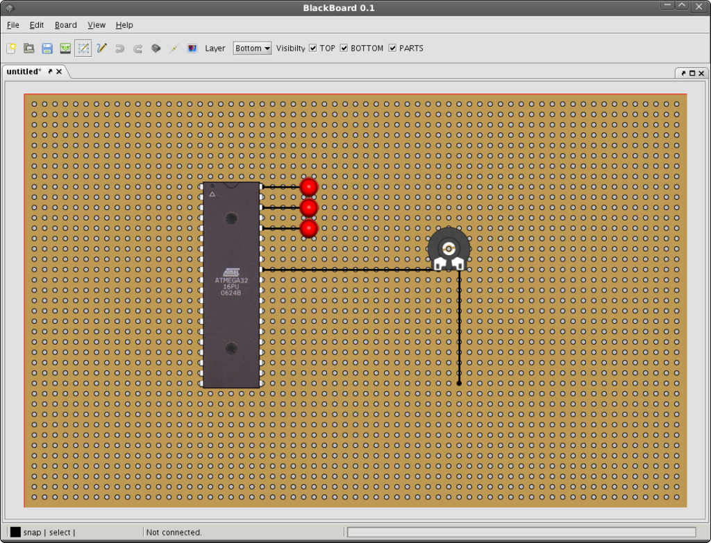
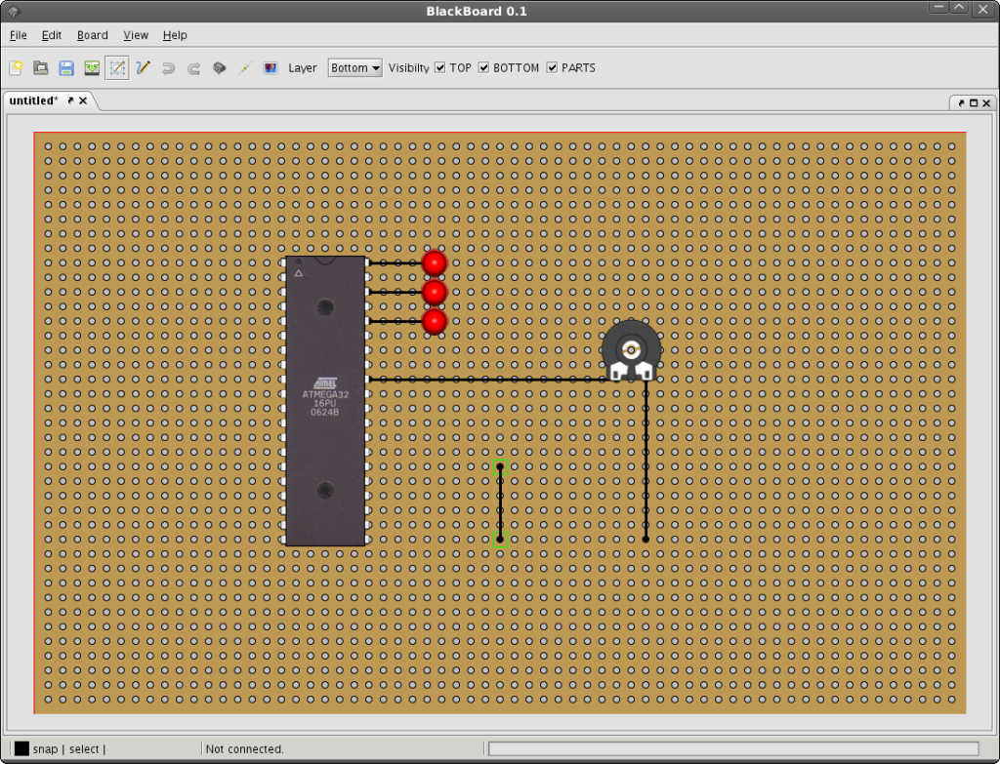
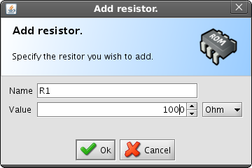
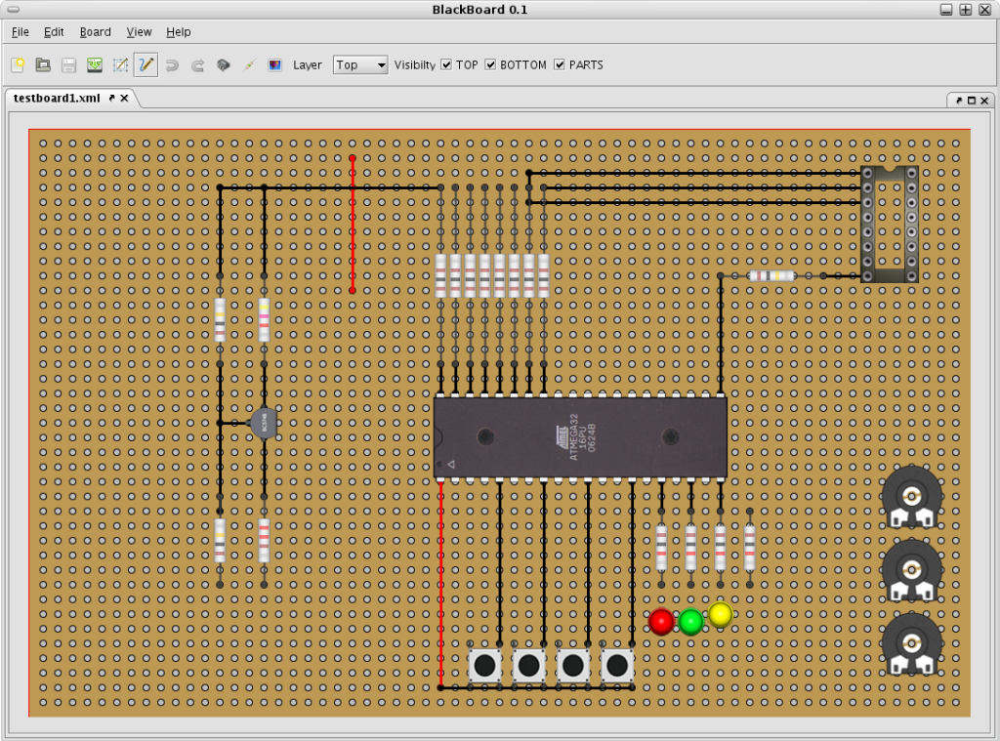
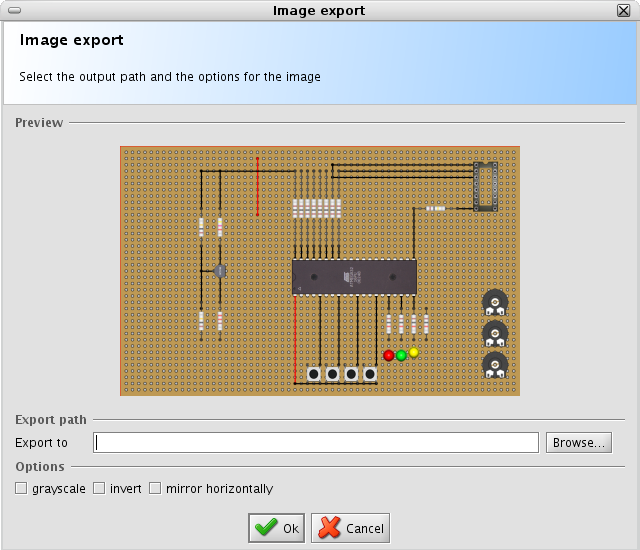

This document describes the use of the BlackBoard BreadBoard Editor. Blackboard is intended for the hobby enthusiast and should help building prototypes on so called breadboards easily.
In order to create an empty board simply go to "File->Create new board". A new editor with an empty board will be opened. The application should now look as shown in the figure below:

Currently BlackBoard knows of three different types of elements, these are:
To place a part (parts are actually all other than resistors and wires, e.g. ICs and IC sockets.) hit the "Browse parts" button on the toolbar (the little IC package) and the part browser will show up as shown in the figure below.

As your part library will grow in the future, you may enter some part of the name, the description or the package type in the filter box on the left side of the dialog. This will help you find the desired part quickly. If you've found the desired part, select it with the mouse and hit the "OK" button, the part will be placed on the board. The following image shows the board editor with an ATMega32 and some LEDs placed.

Blackboard provides two essential modes, selecting parts and lines and drawing lines. In order to switch between them you may use the two hotkeys "S" for select mode and "D" for drawing. Alternatively you may select the desired mode from the select menu. If you are going to draw a wire, as we do in the next step you have to choose the draw mode (D).
To draw a wire simply click where you want the line to start and drag it to the desired endpoint. Du to a little snapping bug the line might not start as expected, but don't mind, I'll show you how to correct that later. After dragging a few wires and adding some parts your board should now look like this:

As mentioned above, you may change the start and endpoints of a wire at any time. In order to do that, select the wire by clicking it. The wire shows now two green handles, which allow you to change them. To change one of the two points of a line, simply click it and drag it to the desired location. See figure below:

Working with layers is very simple. Blackboard provides three layers:
Parts are automatically added to the part layer. Lines are drawn on the top or bottom layer, depending on the selected layer. Lines on the top layer have a red color, bottom lines (wires) have a black color. The layers can be toggled visible with the according checkboxes on the toolbar. The current layer can be selected with the layer drop down box on the toolbar or with the three keyboard shortcuts T,B and P. When exporting the board as an image, only the visible layers are exported.
As resistors are parts with a special behaviour (their size differs), they need to be added with an extra comand. To add a resistor choose "Board->Add resistor" from the menu or use the little resistor symbol from the toolbar. A dialog will appear and let you define the resistor to be added. See figure below.

The same behaviour as for lines applies for resistors. Since these are parts which may differ in their size, you can change the start and endpoints of a resistor at any time. After adding some resistors, your board may look like shown in the image below.
Hint: If you would like to change the size of a whole bunch of resistors, simly switch to select mode, drag a selection and the click onto a single end of a resistor and drag it. This way you can resize a group of resistors easily.
After finishing your layout you may want to create an image from the board in order to print it or to edit it with the graphics tool of your choice. BlackBoard provides a few tools to make that task easy. Lets say you've created a board like shown in the image below:

To export your board as an image, choose "Board->Export image" or just hit the little image button on the toolbar. The following dialog will show up:

If you are going to solder your board, you will do it most of the time from the copper side. BlackBoard simplifies this and lets you export the image as grayscale, inverted or mirrored horizontally. Like this you can create your layout from each side of the board. Alternatively you may export the image with only the layers enabled you need, for soldering the wires for example.
BlackBoard comes with a hand full of parts, but you may add parts at any time by yourself. The parts are located in the parts directory below the BlackBoard folder. The according images are located inside the pars/images folder.
To create a part you need thus an XML file describing the part and an according image. A typical part definition could look like this:
<?xml version="1.0" encoding="UTF-8" standalone="yes"?>
<part>
<width>112</width>
<height>320</height>
<xLoc>0</xLoc>
<yLoc>0</yLoc>
<name>ATMega32</name>
<imageName>atmega32.png</imageName>
<description>ATmel ATMega32</description>
<packageType>DIL</packageType>
<rotation>0</rotation>
</part>
The image for the part has only few constraints: It should fit into the 16 pixel raster of the editor and thus should have dimensions with a multiple of 16. Furthermore you should have the real size in mind while creating an image. A typical breadboard has a raster of 1/10 inch (2.54mm).
The fields xLoc, yLoc and as well the rotation can be always 0, this ist just the initial position of the part. All other fields are text fields which simplify finding a part inside the parts browser. Once you've created the XML file and the image and have placed it inside the parts directory, the parts browser should find the new part after next program startup.